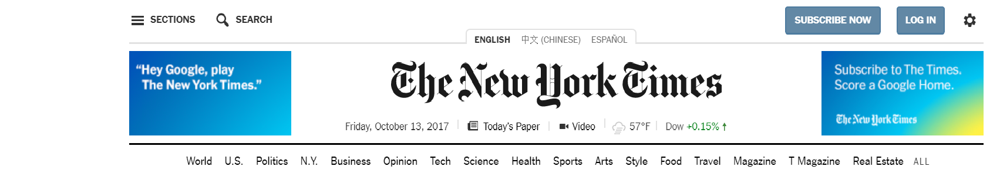
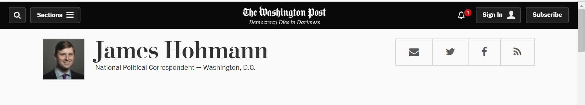

Welcome to the virtual home of Rachel Richardson from Grand Rapids, MI
Advice for MI Daily's WebTeam
1. Add a change language feature

The Michigan Daily's readers are extremely diverse,
so providing the option to browse the site in
various other languages would be very beneficial to many users.
The New York Times has this feature on its website, but it is not
as obvious as it should be. I would reccommend adding it as an interactive
feature at the top of the page, but using larger text than that of the NYT
and/or using a contrasting background or text color to make it stand out.
2. Make authors' information more accesible

While perusing the Daily's site, I noticed that you have to click on an article in order to
be able to directly click on the author's name and see other pieces they have written. Also, if the writer consented to sharing their social media handles, picture, or email, such as the Washington Post did,
this would make it easier for writers and readers to connect, which would be added promotion for the Daily and
interaction between writers and authors could lead to content that otherwise may not have been covered or whose importance may not have been emphaszied as much as it should have been.